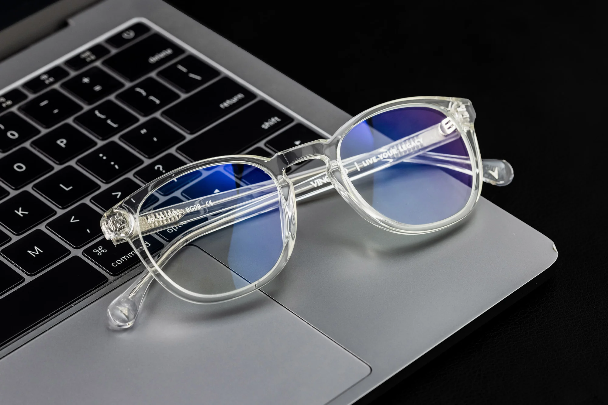

When people talk about glasses, the first thing they refer to is probably prescription glasses. These are the glasses with lenses that correct your vision, to help nearsighted and farsighted individuals to see clearly.
Bifocals glasses are a type of glasses with lenses divided in two zones and correct vision in two ways. The top part allows you to see far and the bottom part to see and read closer.
Trifocals are glasses with lenses that have three zones built in for different kind of vision correction. In addition to the correction in bifocal lenses, they have a zone for intermediate distance.
Progressives are another type of multifocal glasses. Like bifocals and trifocals, they contain more than one zone of correction. However, these zone of correction transition into one another more seamlessly.
These are the glasses often called fashion glasses. The lenses in these pairs have no corrrection and are entirely for the purpose of looking good. If you don't need correction but still want clear lenses, these are the type to go for.
This type of lense is also called blue-light blocking glasses. These glasses filter out some of the blue light produced by screens and prevent it from entering your eyes.
Sunglasses are glasses with tinted lenses, lightly or heavily. This type of lens make it easier to see in brightly lit condition. There are many types of sunglasses, some with prescriptions and some without. These are mostly used for fashion purposes.